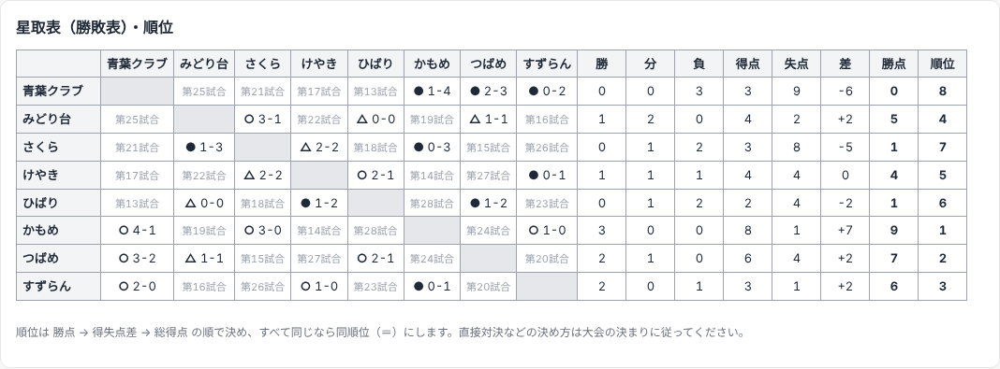

総当たりの対戦表づくり
町内・社内・サークルの大会で、総当たり（リーグ戦）の対戦表を作るツールです。参加チーム（人）の名前を1行ずつ並べるだけで、全部の組み合わせを、同じチームが続けて試合をしないように並べ、コートと時刻を割り当てます。得点の記入欄つきの試合順の表と星取表（勝敗表）を A4 で印刷でき、結果を入れれば勝点と順位も出します。ソフトのインストールは不要で、いつものブラウザで動きます。
お試し版はすべての機能を使えて、6チーム（6人）までの大会を作れます。決済が終わると、そのまま製品版の画面に移動します。ブックマークしておけば何度でも使えます。

見本（8チーム・コート2面）で結果の一部を入れた例。チーム名・得点は説明のための架空のものです。
こんなときに
- ソフトバレー・卓球・バドミントン・フットサルなど、町内会・子ども会・社内の大会の幹事で、総当たりの組み合わせと試合の順番を毎回手で作っている
- コートが2面・3面あり、どの試合をどのコートで何時から行うかを決めて、当日の進行表を配りたい
- 囲碁・将棋・卓球のサークルで、参加者どうしの総当たりの星取表を作って、結果を書き込んでいきたい
- 参加チームが多いのでA組・B組に分けて予選リーグをしたい
できること
- 組み合わせ：全部のチームが、ほかの全部のチームと1回ずつ対戦する組み合わせを作ります。「2回総当たり」にすると、左右（先攻・後攻、ホーム・アウェイ）を入れ替えてもう1回ずつ対戦します。奇数のときは休みの回ができます
- 試合の順番とコート：同時に使うコート・台の数を入れると、同じチームが同じ時間に2試合しないように並べ、連戦（続けて2試合）をできるだけ避けた順番にします。連戦が残るときは、その回数とチームを表示します。左側（先に書く側）になる回数もチームごとにそろえます
- 時刻：開始の時刻・1試合の時間・入れ替えの時間から、試合ごとの時刻と終了予定を出します。「12:00-13:00」のような休み時間には試合を入れません
- 審判・記録係：その時間に試合のないチームから、同じ組のチームを優先して、回数がそろうように割り当てられます
- 組（リーグ）に分ける：組の数を入れると、一覧の上から順に「1,2,3,3,2,1…」（行って戻る）などで分けます。名前のあとに「,A」と書けば、自分で決めた組のとおりに分けます。組が違うチームどうしでコートを分け合って進めます
- 結果と順位：試合ごとに「3-1」と得点を入れると、星取表に「○ 3-1」「● 1-3」「△ 2-2」を書き、勝ち・引き分け・負けの数、得点・失点・得失点差、勝点（勝ち3・引き分け1などを変えられます）と順位を出します。入れた結果はこのブラウザに保存され、次に開いたときも残ります
- 印刷：得点の記入欄つきの試合順の表（A4 縦）、組ごとの星取表（A4 横）、チームごとの予定（自分の試合と審判の時刻・コート・相手）。「結果を入れずに印刷」で手書き用にもできます
- 保存：試合順（結果つき）・順位表・チームごとの予定を CSV（Excel で開ける形）で保存できます
できないこと（購入前にご確認ください）
- トーナメント（勝ち抜き戦）の組み合わせは作りません。総当たり（リーグ戦）だけです
- 連戦を必ずなくせるわけではありません。たとえば 6 チームでコート 3 面のように、毎回ほとんどのチームが試合をする場合は、連戦は避けられません（そのときは回数を表示します）
- 「このチームは午前だけ」のような、チームごとの都合の時間は入れられません
- 順位は 勝点 → 得失点差 → 総得点 の順で決め、それでも同じなら同順位にします。直接対決の結果やくじなど、大会ごとの決め方には対応しません
- 試合の結果を予想したり、賭けに使ったりする機能はありません
- 入れた結果は、使っているブラウザの中にだけ保存されます。別のパソコンで続けるときは、CSV に保存して見ながら入れ直してください
- スマートフォンでも使えますが、印刷はパソコンをおすすめします
ツールを使わずに総当たりの組み合わせを作るなら
紙でもできる「サークル方式」という作り方があります。チームに 1〜6 の番号を付け、上の段に 1 2 3、下の段に 6 5 4 と書き、上下に並んだ同士を対戦させます（1回戦：1-6、2-5、3-4）。次の回は、1 は動かさず、ほかの番号を時計回りに1つずつずらします（上の段 1 6 2、下の段 5 4 3 → 2回戦：1-5、6-4、2-3）。これを5回くり返すと、全部の組み合わせが1回ずつ出ます。チームが奇数のときは「休み」を1つ足して偶数にし、休みと当たったチームはその回はお休みです。
| 回 | 対戦 |
|---|---|
| 1 | 1-6 2-5 3-4 |
| 2 | 1-5 6-4 2-3 |
| 3 | 1-4 5-3 6-2 |
| 4 | 1-3 4-2 5-6 |
| 5 | 1-2 3-6 4-5 |
コートが1面なら、この順に試合をすると 1 番のチームなどが続けて試合をすることがあるため、順番を入れ替えて調整します。このツールが向いているのは、チームが多い、コートが2面以上ある、連戦や審判の回数をそろえたい、時刻入りの進行表と星取表をすぐ印刷したい、というときです。
よくある質問
| 何チームまで作れますか？ | 製品版はチームの数の制限はありません。32チームの2回総当たり（992試合）・コート8面で、並べ終わるまで1秒以内でした（当店の試験環境で計測）。お試し版は6チームまでです。 |
|---|---|
| 同じ名前を2回入れたら？ | 1つにまとめ、何行目が重なっていたかを表示します。全角・半角の違い（「ＦＣ」と「FC」）も同じ名前として扱います。 |
| 得点のない競技（将棋など）でも使えますか？ | 使えます。勝ちを「1-0」、負けを「0-1」、引き分けを「0-0」と入れれば、勝ち・負けの数と勝点で順位を出します。 |
| 毎回同じ順番になりますか？ | 同じチームの並び・同じ設定なら、毎回同じ対戦表になります。チームの並び順を変えると組み合わせの順番も変わります。 |
| データはどこかに送られますか？ | 送られません。組み合わせの作成・印刷はすべてお使いのブラウザの中で行います。チームの一覧・設定・入れた結果は、続きから使えるようにこのブラウザの中にだけ保存します（「入力を全部消す」で消せます）。 |
安心してお使いいただくために
- チームの名前や結果はお使いのブラウザの中だけで扱い、サーバーには送信しません
- 動作環境：最新版の Chrome・Safari・Edge・Firefox
- 説明どおりに動かない場合は、ご購入から7日以内にご連絡いただければ返金します
名簿から人数のそろった班を作るなら 班分け・グループ分け、係や当番を順番に割り振るなら 当番表の自動作成、参加者の名札なら 名札の作成 もあります。